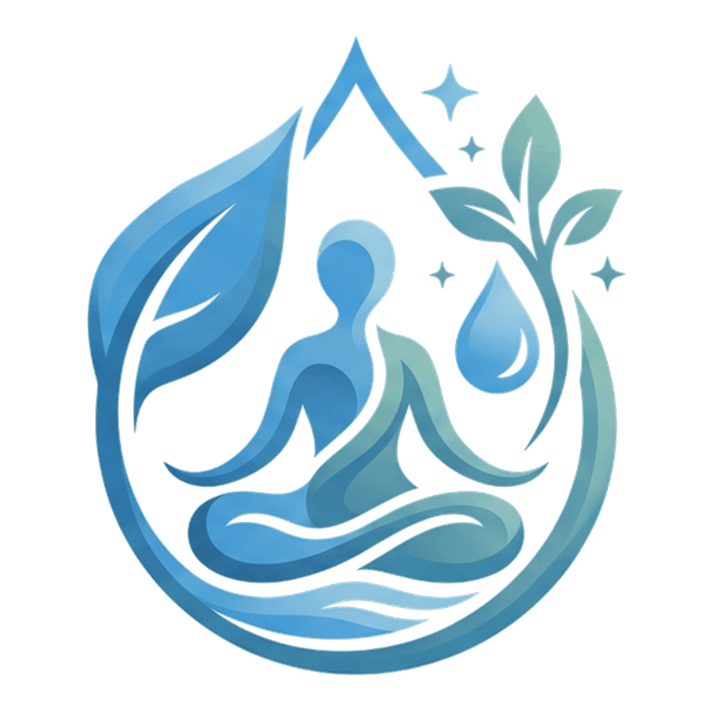

Anthroposophic External Therapies
Touch, rhythm, warmth, oils and compresses applied externally to support the body's own regulation.
Anthroposophic External Therapies & Integrative Healing
Cultivating health, vitality & inner balance
Nestled in an anthroposophic community with a view over Lake Neuchâtel and the Swiss Alps, the clinic at L'Aubier in Montézillon (NE) offers anthroposophic external therapies supported by complementary holistic approaches for body, mind and inner well-being.

Who it is for
People arrive for many different reasons. The clinic may be particularly relevant if you are looking for support with:
If you are unsure whether this is the right place for you, a first consultation is where that question gets answered.
The practice
The practice is guided by a single question: What supports health?
Anthroposophic medicine extends conventional medicine rather than replacing it. Every treatment begins from careful clinical observation.
The work aims to support:
What is offered
Anthroposophic external therapies form the heart of the practice, complemented by selected holistic modalities chosen to suit each person.
Touch, rhythm, warmth, oils and compresses applied externally to support the body's own regulation.
Lifestyle, rhythm, rest and movement explored together for sustainable well-being.
Reiki and Pranic Healing: a quiet, non-invasive session using light touch and focused attention, to encourage relaxation and a clearer sense of the body.
Begin with a personalized consultation to explore which therapeutic approach may best support your current needs.